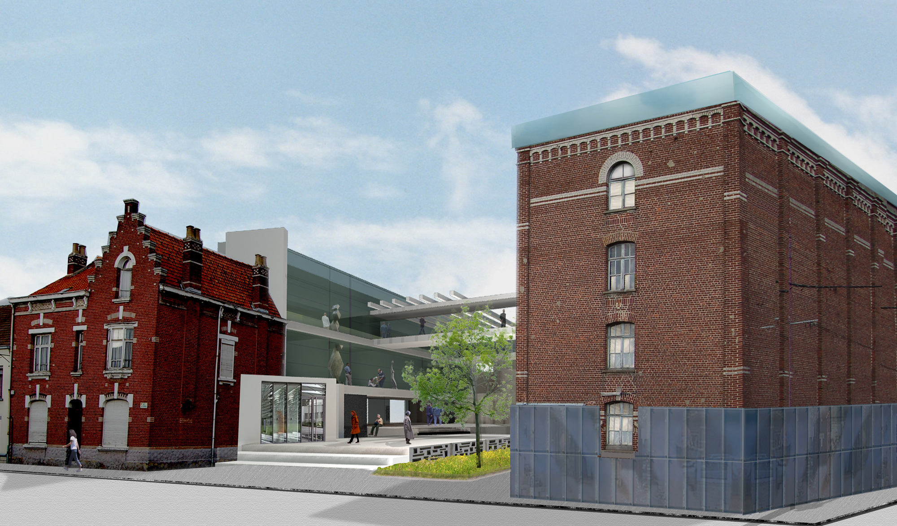
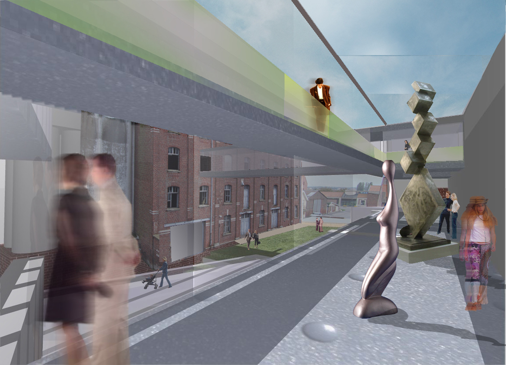

Le moulin existait déjà avant la guerre de 14-18. Entièrement détruit lors des bombardements de 1917, il est reconstruit pour le bâtiment principal de 1921 à 1929. La meunerie, le triage et l’écossage des haricots représentent ses deux premières activités.
 Notre réflexion est porte tout d’abord sur l’impact urbain qu’un projet de ce type pouvait représenter pour la commune de Saint-Venant, que ce soit par sa relation avec la commune, son attractivité comme pour le développement économique que ce projet pouvait générer.
Ensuite et par moyen d'une architecture légère et suspendue dans l’espace, le projet se porte comme une greffe entre les bâtiments existants; ces bâtiments nous souhaitons les restaurer pour qu’ils m'accueillent des expositions artistiques et des espaces de rencontre. le tout marqué par une promenade centrale qui communique depuis l’entrée jusqu’a la place et le jardin offrant un cadre pour des nouvelles et régulières exposantes. Le jeu des niveaux dans la place fusionne avec les courbes du terrain. Les projets offre par moyen de ses parcours, une redécouverte de la minoterie et une relecture sensible de ses traces patrimoniales qu’étaient occultés.
Aujourd’hui quelques années plus tard du concours nous avons appris que le moulin été en train d’être démoli...les raisons:
«Une page qui se tourne pour beaucoup d’habitants, une institution qui disparaît. Nostalgie pour les uns, questionnement et interrogation pour d’autres. « Cette démolition fait suite à une analyse financière et architecturale ; elle permet de recomposer le paysage du secteur et de se libérer d’une friche qui n’a pas trouvé sa destination, sauf à accepter un surcoût de réhabilitation incompatible avec les finances communales », explique André Flajolet, maire» les échos